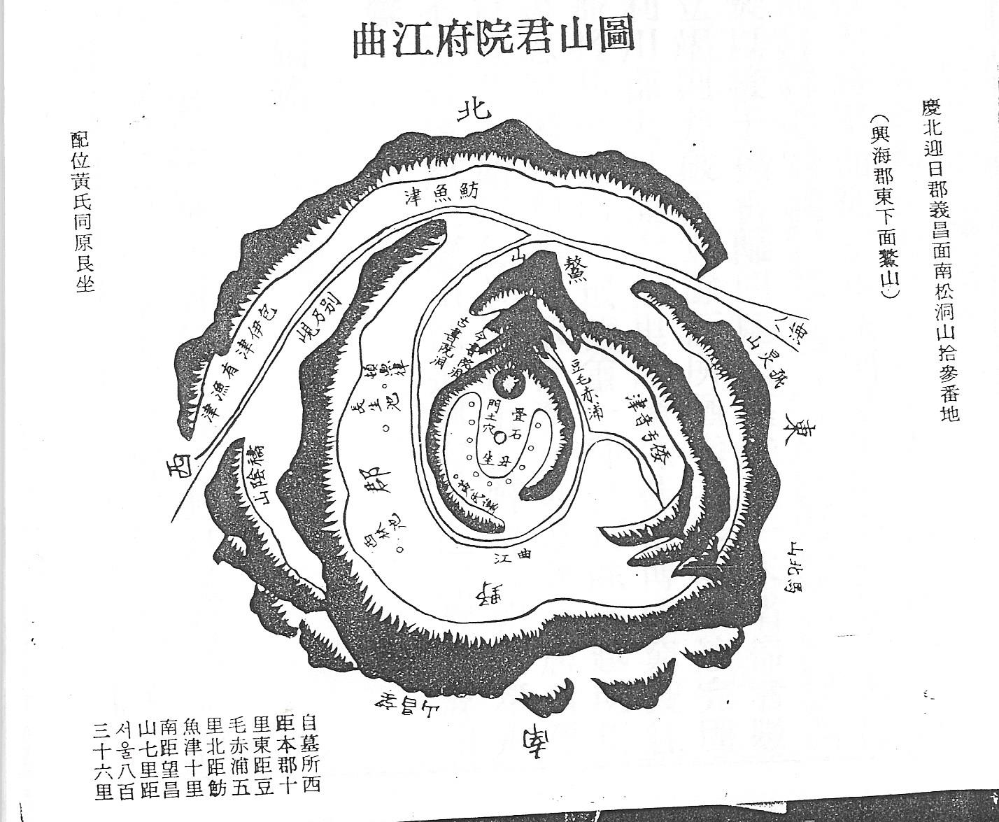

곡강천( 曲江川)은 경상북도 포항시의 북구 신광면 만석리에서 발원하여 신광면의 중요 지역과 흥해읍을 거쳐 동해로 빠져나가는 하천이다.
『세종실록지리지』(흥해)에 고을의 별칭 중의 하나로 곡강(曲江)이 기록되어 있을 정도로 상징성이 높은 하천이었다. 하지만 이때의 곡강이 현재의 곡강천 전체를 의미하지는 않는다.
『신증동국여지승람』(흥해)에 곡강이 고을 중심지의 동쪽 7리에 있다고 기록되어 있는데, 현재의 흥해읍 곡강리 부근을 의미한다.흥해읍의 넓은 평지를 지난 하천이 갑자기 좁은 산지 사이를 지나면서 급하게 흘러가는데, 매년 11월 상순에 제사를 지내던 곡강제당(曲江祭堂)이 있었다.
『신증동국여지승람』(흥해)에는 신라에서 중사(中祀)에 실려 있던 하천 4곳 중의 하나인 동독(東瀆)의 토지하(吐只河)가 곡강일 것으로 추정하고 있다.
일제강점기 하천의 본류와 지류의 이름을 구분하여 붙일 때 본류 전체를 가리키는 이름으로 곡강천이 선택되어 현재까지 이르고 있다. 조선시대에는 흥해군의 중심지 북쪽을 흐르는 곡강천 부분을 북천(北川)이라고도 하였으며, 지금의 학천을 서천(西川)이라 하였다.
[네이버 지식백과] 곡강천 [曲江川, Gokgangcheon] (한국지명유래집 경상편 지명, 2011. 12.)

또한 곡강(曲江)은 경상북도(慶尙北道) 포항시(浦項市) 북구 흥해읍(興海邑) 일대(一帶)의 별칭(別稱) 이다. 삼한시대(三韓時代)에는 다벌국(多伐國)이 있었다고 한다.
신라(新羅) 때에는 퇴화군(退火郡)이라 불렀다가, 757년(신라 경덕왕 16)에 의창군(義昌郡)으로 개칭(改稱)하였고 신라(新羅) 말기(末期)에는 남북미질부성(南北彌秩夫城) 이라고도 불렸다.
930년(고려 태조 13)에 남북미질부성(南北彌秩夫城)을 다시 합(合)쳐 흥해군(興海郡)으로 고쳤고, 1018년(현종 9)에 경주부(慶州府)에 속(屬)하였다가, 1172년(명종 2) 감무(監務)를 두었다.
1367년(공민왕 16)에 지군사(知郡事)로 승격(昇格)하였고 곡강(曲江)·오산(鰲山)이라는 별호(別號)가 있었다. 조선시대(朝鮮時代)에도 흥해군(興海郡)으로 유지(有志)되었다.
1895년(고종 32) 지방제도(地方制度) 개정(改定)으로 동래부 흥해군(興海郡)이 되었고, 1896년 경상북도(慶尙北道) 흥해군(興海郡)이 되었다.
1914년 군면(郡面) 폐합(廢合)으로 흥해군(興海郡)이 6개 면(面)으로 분면(粉面)되어 폐지(廢地)되고, 영일군(迎日郡)에 병합(倂合)되었다.
1956년 흥해면(興海面)과 곡강면(曲江面)을 의창면(義昌面)으로 통합(統合)하고 1973년 의창면(義昌面)이 읍(邑)으로 승격(昇格)하였다가 1983년 의창읍(義昌邑)이 다시 흥해읍(興海邑)으로 개칭(改稱)되었다.
이후(以後) 1995년 영일군(迎日郡)이 포항시(浦項市)에 병합(倂合)되었고 북구(北區)로 신설(新設)되어 통합(統合)되었다.